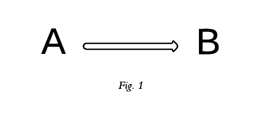

Time and Concurrency
Programming paradigms and the failure of state
Jason Lewis
Yet Analytics
Hello
I think I was destined to become a functional programmer.
Some years ago
I spraypainted liked graffiti like this...
...and ended up here.
Time
We have problems with:
- State
- Value
- Identity
You could not step twice into the same river.
Problems are both:
- In our programs
- In our datastores
There are solutions

Clojure
Datomic
(of which these are but two)
What is it?
An Expert Explains
Time
Perception
Reality
Concurrency
Really, (>= things 3)
- Concurrency
- Parallellism
- Distributed systems
- ...
Concurrency
Object-Oriented (stateful):
- Stateful objects
- Mutexes and locking
- No (realistic) notion of time

Functional:
- Pure fns are timeless
- Zero state
- Run anywhen, anywhere, same result
Clojure(Script)
- Emphasis on pure functions
- Persistent data structures
- Side-effects are allowed
- State is managed
Web programming IS distributed systems programming.
Even in the simplest web application, we need to consider at least 3 things: the server, the browser, and the user.
One language, two hosts:
- JVM (server)
- JS (browser)
Code Sharing
(defn str->int [s]
#?(:clj (java.lang.Integer/parseInt s)
:cljs (js/parseInt s)))
Datomic
- EAVT tuple store database.
- ACID transactions.
- Immutable data = strong consistency + horizontal read scalability.
- Writes are not update-in-place; all data is retained by default.
- Makes time part of the database itself.
Big win:
TIME TRAVEL
Since Datomic retains the history of the db state, we can query the db as-of any given point in time.
Since it treats the db as a value, and uses the same persistent data structures as Clojure itself, we can also query the future, by joining arbitrary data to a given db value.
It gets better...
(q '[:find ?title
:where
[?e :movie/year 1987]
[?e :movie/title ?title]])
Datomic's datalog queries are just vectors, which means they can be passed around like any other of Clojure's persistent data structures... even from the browser to the server.
Putting it all together
- Pure functions acting on immutable data structures shared between client and server.
- Peers keep a hot copy of the db as a value in memory
- Reads and writes are orthogonal
Time = λ
Baltimore Clojure Meetup
Thank You!
Jason Lewis
Yet Analytics
jason@yetanalytics.com